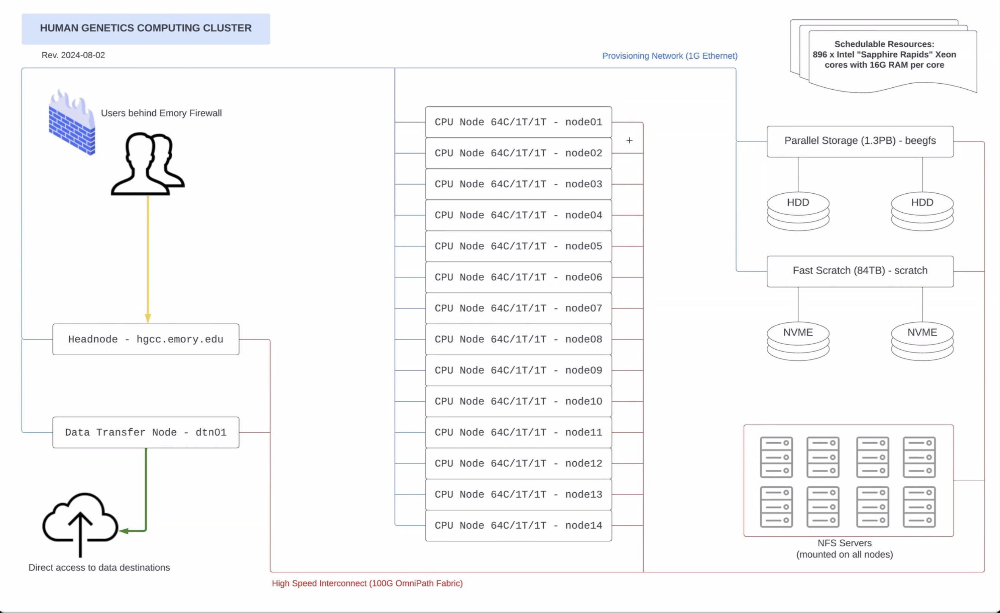
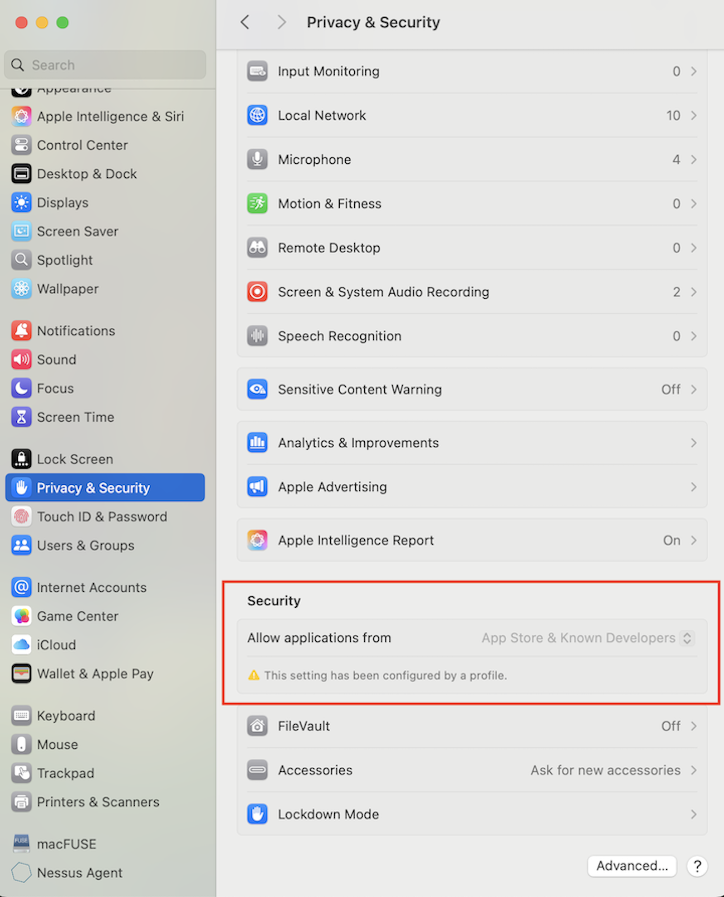
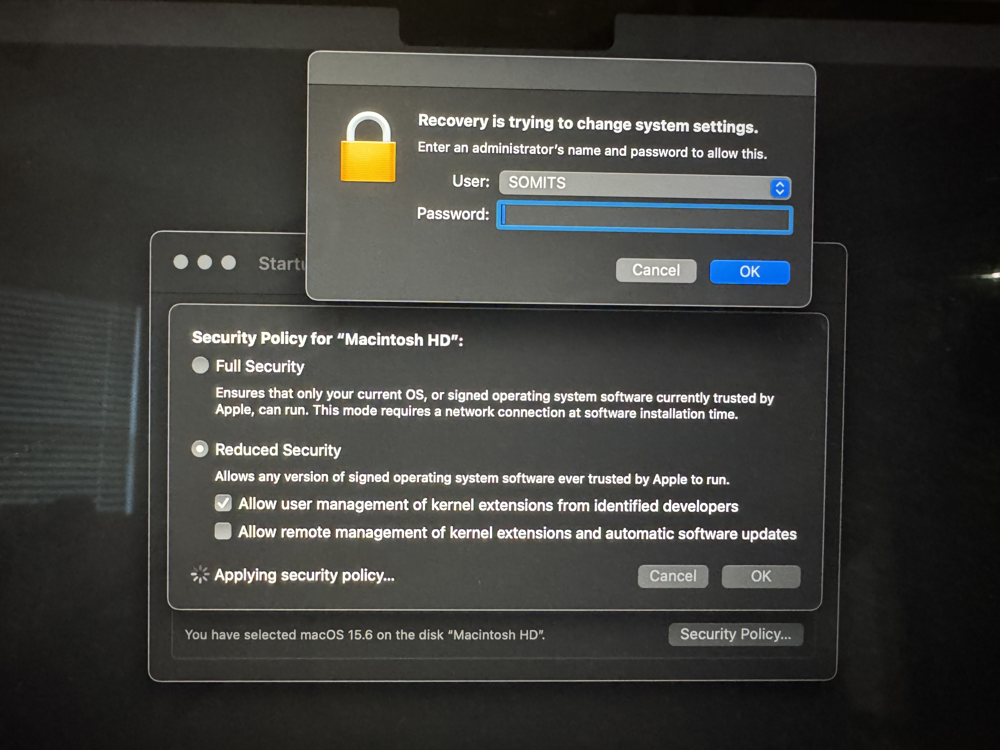

/home/[userid]/ are hosted on /beegfs. head.hgcc;
ssh dtn01 with your Emory NetID password./scratch/
/nfs/yangfss2/data/
1,000,000 dose not apply to lab data drives, only apply to user home directories under /home/[userid]./home/[userid]/yangfss2//nfs/yangfss2/data/commons/[userid] : User work directories on lab data drive.
/nfs/yangfss2/data/shared/** : Shared data directories
/nfs/yangfss2/data/shared/Software/./nfs/yangfss2/data/projects/ : Project directories shared by the lab./nfs/yangfss2/data/public/ : Files to be shared with other groups. Public to be viewed by all users on the cluster.
Login to Emory VPN .
Login using ssh by typing the following command in the bash shell terminal with your Emory NetID and Emory passworbash shell. Replace <Emory_NetID> by your Emory NetID.
ssh <Emory_NetID>@hgcc.emory.eduSetup SSH login without typing password : repeat this setup for each of your local computer. Highly recomend to set this up first. It will save you tons of effort.
~/.ssh/id_rsa.~/.ssh/id_rsa.pub. mkdir -p ~/.ssh
ssh-keygen -t rsa~/.ssh under your HGCC home directory: makdir -p ~/.sshcat ~/.ssh/id_rsa.pub | ssh <Emory_NetID>@hgcc.emory.edu 'cat >> ~/.ssh/authorized_keys'~/.bashrc fileThe ~/.bashrc file will be sourced automatically every time when you logged in to the system, or open a new interactive shell session. This is the place for your to setup global environment that you want to work in.
See useful things that you can setup your own ~/.bashrc file under your home directory to automaticlly run commands for each session.
alias. For example the command alias ll='ls -h -l -t --color' in the ~/.bashrc file will allow you to just type ll to list all files in their long listing format, show sizes as human readable, sort by time with color.
Setup environment variables such as $PATH, to let the system know when to search for executible files/tools. For example, export PATH=/nfs/yangfss2/data/shared/bin:$PATH will add additional path /nfs/yangfss2/data/shared/bin into existing $PATH content. Additional paths can be added with seperation by :.
Load software modules, for example, spack load r@4.4.0 will automatically load R module.
WinSCP for Windows system
macFUSE/SSHFS for MAC


Mount the remote HGCC home directory /home/<jyang51>/ to local directory ~/Desktop/HGCC/. Replace <jyang51> by your Emory_NetID by the following command. Please do not create an actual ~/Desktop/HGCC/ directory on your local computer. sshfs <jyang51>@hgcc.emory.edu:/home/<jyang51>/ ~/Desktop/HGCC/ -o auto_cache -ovolname=HGCC -o follow_symlinks
Unmount the directory by umount -f ~/Desktop/HGCC/.
Install Visual Studio Code with Remote-SSH extension.
Setup configuration file under local home directory. Type pwd in your local shell window to show your local home directory.
mkdir -p ~/.ssh; touch ~/.ssh/configconfig file. Remember to update your Emory UserID.Makesure you have setup your identification file ~/.ssh/id_rsa following the above instructions of setting up SSH login without typing password.
Host HGCC
HostName <Server address>
User <UserID>
IdentityFile ~/.ssh/id_rsaPress shift + command + p on mac, or type > in the search window in the middle top of your VSCode window, to open the choice selection.
Remote-SSH: Settings. Specify the config file directory as ~/.ssh/config.Remote-SSH: Connect to Host ..., then select HGCC if you have the above config file setup. See more information at Extension Documentation.
Other useful extensions on VSCode: Python, Jupyter, Python Debugger, C/C++, PowerShell, Markdown All in One, vscode-pdf, Rtools, GitHub Copilot Chat
Now you can access all files on HGCC through the mounted local directory.
Command rsync is recommended
rsync [options] [SOURCE] [DESTINATION]
Command scp can also do the job
scp <path_to_local_file> <Emory_Net_ID>@hgcc.emory.edu:<destination_remote_path_on_hgcc>rsync is recommended for moving data files within the cluster, between local and cluster, between clusters.cp also copys data.rm.mkdir.mv.ls.ls -l -h.vi or nano to edit text files on the cluster. Recomend edit text files through local mounted directory.less, cat. less -S is recommended for viewing large text files on cluster.gzip.gunzip [file_name.gz].tar for zipping and unzipping directories.man to see user manual/instructions of Linux tools, e.g., man ls .| to take output from the command before | as the input for the command after |. For example, cat xx_file.txt | head will print the top 10 rows of the xx_file.txt file on the bash window.alias to set up your own shortcup of commands in the ~/.bashrc file. See Examples. Example alias commands such as alias c='clear', can be seen through /home/jyang51/.bashrc. This would set up c as an alias/short-cut for the command clear.Command man [command] would give help page for Linux commands, e.g., man rsync. Type q to exit from the help page.
ssh dtn01 with your emory NetID and emory passowrd for large data transfers.srun -N 1 -n 1 --pty --preserve-env bash.
-N is the number of nodes, -n is number of tasks, --pty gives you a pseudo terminal that runs bash. sbatch under headnode.
/scratch/ to avoid extensive I/O between compute node memory and storage disks.
mkdir -p /scratch/tmp_jyang51/, with a unique directory name tmp_jyang51. rsync [path_to_data_file]/[data_file_name] /scratch/tmp_jyang51/. /scratch/tmp_jyang51/. rsync /scratch/tmp_jyang51/ [path_to_output_files]/.rm -rf /scratch/tmp_jyang51.README.md file for each data directory.sbatch --nodelist node[01-07]spack find -x to list all installed software modules on HGCC.spack find --loaded to list all loaded software modules.${PATH} by which [software_name].Add a symbolic link of the executible file under ${PATH} to avoid typing full directory of the executible file.
export PATH="~/.local/bin:$PATH" # add local directory to PATH. add this to ~/.bashrc file to avoid running this for each session.
echo $PATH; # show current PATH directories
cd ~/.local/bin; #
ln -s [directory_to_executible_file]; # create symbolic link to the softwarespackspack load [software_name].
spack load plink2@2.00a4.3 to load plink.plink2 --help to see plink user mannual after loading plink.spack unload plink2@2.00a4.3.R in the current session to start an R session after loading R by spack load r@4.4.0.python in the session to start a python session after loading Anaconda3 by spack load anaconda3@2023.09-0.~/.local/, or work directory on lab data drive.
~/.local/bin/.~/.local/bin/ in the $PATH environment variable, so that the system can find the executible files. conda to install python libraries under your virtual python environment. 1,000,000 per group. Python libraries, environment files, and R library files can easily exceed the limit for a group. Once the limit is reached, the logins of all members might fail and experience lags.It is recommended to create python environment on your lab data drive and install software to your lab data drive.
Make a soft link of the executible tool under /nfs/yangfss2/data/shared/bin by the following commands:
cd /nfs/yangfss2/data/shared/bin
ln -s [tool_directory]Include the following command in your ~/.bashrc file to automatically run this for each bash session, so that the system can find the executible file: export PATH="/nfs/yangfss2/data/shared/bin:$PATH"
df -hdu -h -d1find [directory_path] --type f | wc -l.